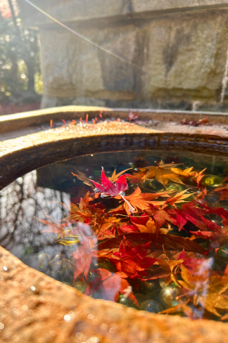
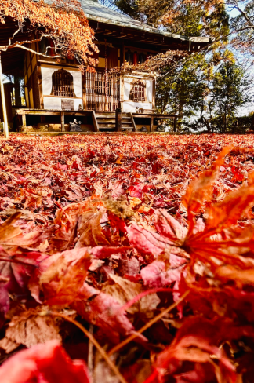
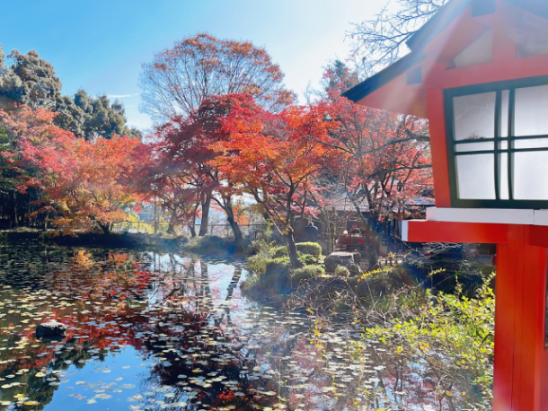
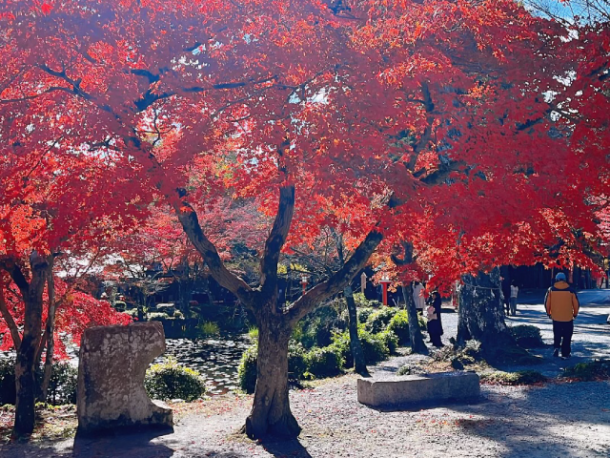
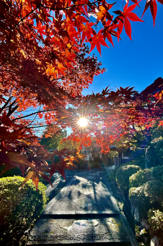
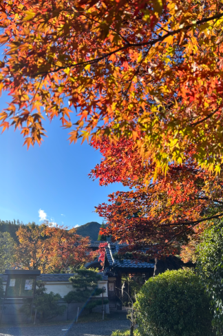

最新の情報は 公式サイトのツアーページ をご覧ください。
京都・西山、紅葉をめぐる半日 ～タクシーで訪れる、静かな秋の名刹～
※大人・子ども同額（拝観料含む）
※午前午後共通
※1名様からご予約いただけますが4名様以上で運行します
※拝観時はドライバー同行いたしません
| お申込み状況(最少催行人数4名) | |
| 午前プラン | |
| 午後プラン | |
※最新のお申込み状況はお問い合わせください
京都の紅葉といえば、つい有名な観光地を思い浮かべますが、少し足を延ばした「西山」には、まだまだ知られざる美しい紅葉の名所が点在しています。
山あいにひっそり佇む古刹や、色鮮やかな紅葉に包まれる境内。
人の波を少し離れて、静かな秋の京都を楽しむ――。
そんな“大人のための紅葉めぐり”に出かけませんか？
午前コースでは、京都の街を見渡す「善峯寺」、なりひら桜でも知られる「十輪寺」、そして山深い場所に佇む「金蔵寺」へ。
午後コースでは、紅葉の名所として知られる「勝持寺」、美しい社殿と紅葉が楽しめる「大原野神社」、そして趣ある庭園が魅力の「正法寺」へ。
どちらのコースも、公共交通機関では少し訪れにくい場所を含め、タクシーで効率よくめぐります。
朝からたっぷり楽しむ「午前コース」、ゆっくり出発する「午後コース」。
その日の気分や予定に合わせて、お好きなコースをお選びいただけるのも嬉しいポイント。
「一日かけるほどではないけれど、今年も紅葉を見に行きたい」…
そんな日にぴったりの、気軽でちょっぴり贅沢な秋のお出かけです。
今年の秋は、まだ知らない京都へ。
静かな西山で、とっておきの紅葉に出会いませんか？
【午前プラン】
| 時間 | 場所 |
| 8:30 | 京都駅八条口MKタクシーのりば |
| 9:10 | 善峯寺 |
| 10:10 | 十輪寺 |
| 11:00 | 金蔵寺 |
| 12:20頃 | 京都駅（解散） |
【午後プラン】
| 時間 | 場所 |
| 13:30 | 京都駅八条口MKタクシーのりば |
| 14:10 | 勝持寺 |
| 15:00 | 大原野神社 |
| 15:50 | 正法寺 |
| 17:10頃 | 京都駅（解散） |
※拝観時はドライバーは同行いたしません。
※渋滞等で、予定通りの滞在時間をお取りすることができない場合がございます。予めご了承ください。
◆気象状況により紅葉の見ごろは前後する場合があります。
-
金蔵寺


-
-
大原野神社
-

-

-
正法寺


-
-
【MKトラベルLINE公式アカウント】
MKトラベルの新規ツアー情報をLINEでお届けいたします

【各SNSでも京都の情報やツアー情報をお届けしています】


旅行条件
| ツアー番号 | T00002 |
| 出発地 | 京都市内 |
| 添乗員／ガイド | 添乗員：なし（乗務員がその業務を代行いたします） |
| 食事 | なし |
| 最少催行人数 | 4名 |
お申込みについてのご注意
※最少催行人数は4名様です。最少催行人員に満たない場合は、旅行の実施を取りやめることがあります。出発の3日前にその旨をご連絡し、お客様から当社がお預かりしている旅行費用の全額をお返しいたします。
※旅行条件・旅行代金は、2026年9月1日現在を基準としています。
※行程および帰着時間は交通事情などにより変更になる場合があります。
※お申込みの前に弊社の募集型企画旅行規約をご確認ください。
よくある質問
Q.1名ですが、申し込みできますか？
A.はい。お一人参加の方もたくさんいらっしゃいますので、お気軽にお申し込みください。
Q.参加したかったけど、日程が合いません／終了していました
A.貸切で再現できる場合もございますのでご相談ください。お問合せフォームはこちら
Q. どの寺院を巡りますか？
A.午前プランは「善峯寺・十輪寺・金蔵寺」、午後プランは「勝持寺・大原野神社・正法寺」をめぐります。
どちらのプランも企画者おすすめの寺院をぎゅっと詰め込んでいるので、お日にちの合う方はぜひ両プランご参加ください♪
Q. 紅葉の見頃はいつ頃ですか？
A.善峯寺・大原野神社は11月中旬～12月上旬、十輪寺・金蔵寺・勝持寺・正法寺・正法寺は11月中旬～11月下旬が例年見ごろとなっております。本ツアーではまさにその見ごろの時期に各寺院を巡ります。
Q. ツアー中はどのくらい歩きますか？
A.コースにより異なりますが、観光場所によっては階段や坂道を歩いていただく場合がございます。
歩きやすい靴でのご参加をおすすめします。
Q. 各寺院では自由に拝観できますか？
A.はい、自由に散策・拝観いただけます。
Q. 雨天でも催行しますか？
A.はい。雨が見込まれる日は、安全のため滑りにくい靴でご参加ください。
＜お問合せフォームはこちら▶＞
＜MKトラベルTOPはこちら▶＞
＜おすすめツアー一覧はこちら▶＞
お支払い方法
・クレジットカード決済
※コンビニ決済をご希望のお客様はお電話にてご予約お願いいたします
お支払方法詳細はこちら
お客様のご都合でご予約をキャンセルされる場合は、すみやかに下記お問合せ先までご連絡ください。
キャンセル料
11日目に当たる日以前
無料
10日目に当たる日以降
20%
7日目に当たる日以降
30%
旅行開始日の前日
40%
旅行開始日の当日
50%
旅行開始後又は無連絡
100%